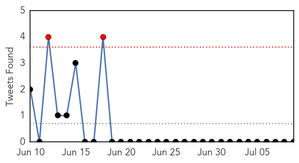
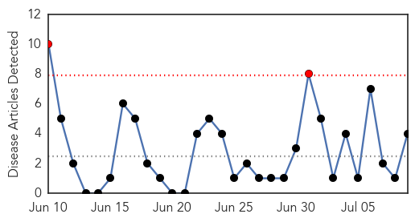
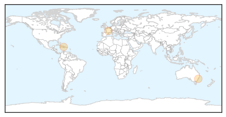
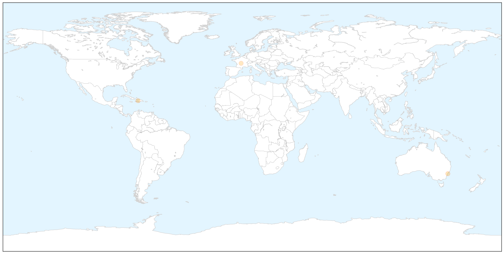

MERS
30-Day Web Trend
0 alerts, 4 warnings

30-Day Twitter Trend
2 alerts, 0 warnings

Article Locations

Article Confidences

Top Articles:
- 0.986
- MERS Fast Facts
- 0.986
- 14 close contacts of foreigner with MERS-CoV home quarantined
- 0.979
- Health Ministry inspects MERS-CoV preventive measures in Can Tho — Talk Vietnam
- 0.975
- No new suspected MERS cases
- 0.971
- Philstar Mobile
- 0.966
- From the Center with Rolly Espina
- 0.965
- 14 contacts of foreigner with MERS quarantined
- 0.798
- Man with MERS travelled through Singapore before developing symptoms
- 0.513
- National Pork Board cites rapid, accurate diagnostics as integral to the success, effectiveness of the Swine Health Information Center
Top Tweets:
-
No tweets found for Jul 09, 2015
Hepatitis
30-Day Web Trend
2 alerts, 0 warnings

30-Day Twitter Trend
0 alerts, 0 warnings

Article Locations

X

Article Confidences

Top Articles:
- 0.843
- How To Cure Hepatitis C (5 Steps)
- 0.805
- Sydney dentist safety scare may not be to blame for patients who test positive for HIV, Hepatitis C: experts
- 0.773
- New York Amsterdam News: The new Black view
- 0.708
- Study analyzes attitudes and practices of general physicians in different vaccination scenarios
Top Tweets:
-
No tweets found for Jul 09, 2015